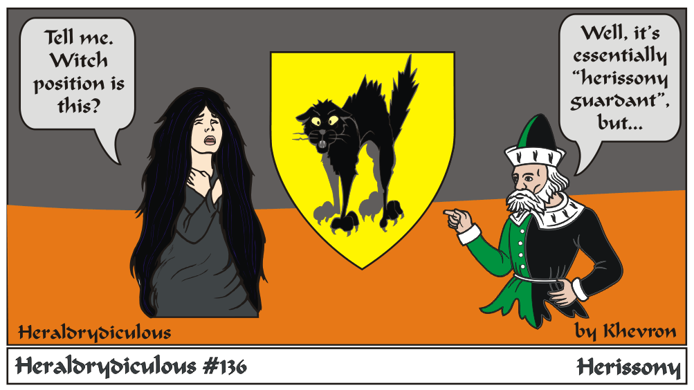

Herissony is a vanishingly rare position - of course, this isn't quite right - it's Trian aspect, shadow colors and overly modern look. Herissony is not distinguished
from passant or by extention, statant.
I also generally recommend against sable/black animal/bird/critter/varmint charges - and details are easily lost and they may become 'blob sable'.
e-mail: 
Back to Khevron's Heraldry Page